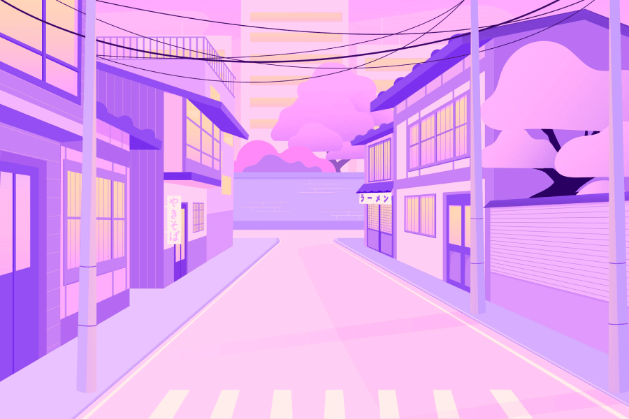
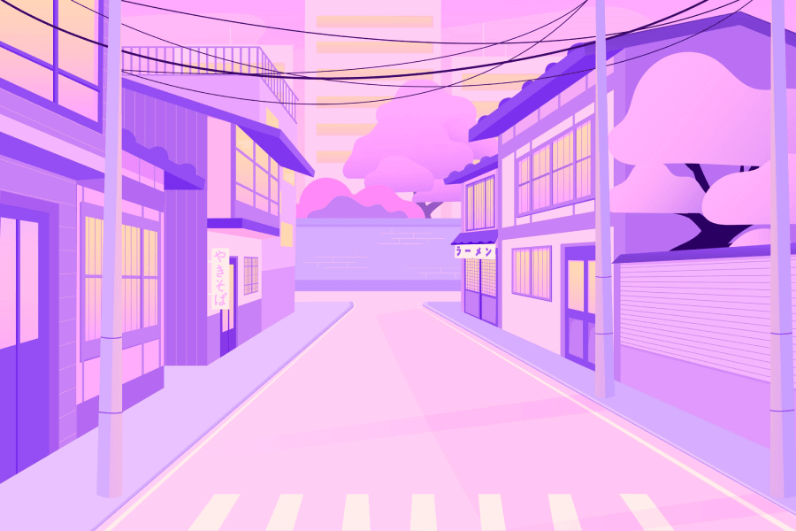

Многозадачность
Особенно сложно сосредоточиться, когда задач много и все они — важные. Где же легендарная многозадачность, когда она так нужна вам (и всем нанимающим менеджерам этого мира)? А дело в том, что её просто не существует. Исследователи выяснили, что мозгу тяжело концентрироваться даже на двух делах одновременно. А когда в поле внимания попадает несколько важных задач, организм паникует и выделяет кортизол и адреналин — «гормоны стресса». Из-за этого мы работаем невнимательно: ошибаемся и быстро устаём.
Дофамин
С гормонами стресса всё понятно, но дальше — ещё интереснее. В нашей невозможности сосредоточиться замешана и полная противоположность стрессу — дофамин. Это вещество участвует в системе вознаграждения мозга. Причём тут он? Мы часто отвлекаемся от важной задачи на что-то более «приятное» для мозгов. Например, смотрим лайки в соцсетях. В это время и выделяется дофамин — и мы чувствуем удовольствие. Получается замкнутый круг: чем больше отвлекаешься, тем больше удовольствия получаешь.


 
